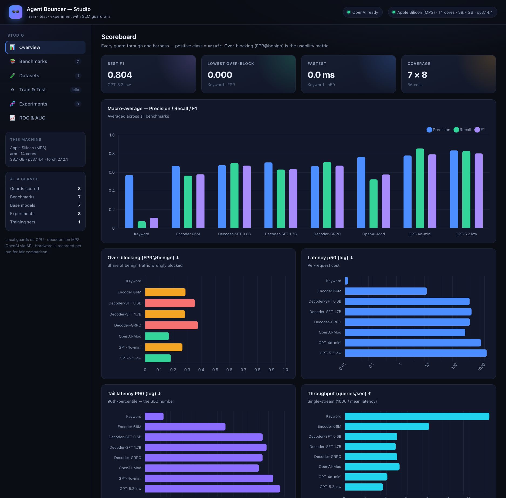

🕶️ Agent Bouncer
A tiny, fast safety bouncer for LLMs and agents — it screens prompts, tool calls, and outputs before they reach your model. Small-language-model guardrails trained with fine-tuning + RL, benchmarked on a standard suite against GPT-4o-mini, GPT-5.2, and OpenAI Moderation through one honest harness, and shipped with a web Benchmark Studio.
unsafe.

What it does
Agent Bouncer is a request-path guardrail: a small, cheap classifier/judge that decides safe vs unsafe for each prompt, tool call, or output — and a workbench for making that guard measurably good.
Guards, from 0 to GPT
A keyword baseline, a fine-tuned encoder (DistilBERT 66M / ModernBERT-large 395M), decoder guards (Qwen3-0.6B/1.7B via SFT, and a GRPO reasoning guard), OpenAI Moderation, GPT-4o-mini, and GPT-5.2 at low / medium / high reasoning effort.
One honest harness
Seven benchmarks across guardrail, red-teaming, and over-refusal axes. Precision / Recall / F1 / ROC-AUC / p50 / p90 / throughput — with over-blocking (FPR@benign) as the headline usability metric.
Ensembles, interactively
Combine guards with union / intersection / majority / mean / weighted strategies. The Studio's ensemble builder scores your mix instantly from dumped per-sample predictions and drops it onto the leaderboard.
Quickstart
Clone the repo, set up the environment, and launch the Benchmark Studio.
# 1. Environment (Python 3.12 recommended)
make setup # venv + eval/benchmark/serve extras
# or: pip install -e '.[eval,serve,notebook]'
# 2. Launch the Benchmark Studio → http://127.0.0.1:8000
./start.sh # installs fastapi/uvicorn if needed
# or: uvicorn agent_bouncer.serving.api:app --reload
# 3. Build a dataset, train a guard, test it (leakage-guarded),
# and compare on the Leaderboard — from the Studio or the CLI.
make bench # download + run the 7-benchmark suite
make test # run the test suite (green)Set OPENAI_API_KEY in .env to score the OpenAI Moderation, GPT-4o-mini, and GPT-5.2 (low/medium/high) guards; everything else runs locally on CPU.
Documentation
Scan by area. Each link opens a full page generated from the authoritative Markdown sources in docs/.
Learn
A self-contained mini-course on the models and methods behind SLM guardrails.
Studio & workflow
The guided loop from raw benchmarks to a tracked, versioned, compared guard.
Benchmarks & results
How guards are scored, and how to combine them.
Architecture & roadmap
How the pieces fit, and where the project is going.